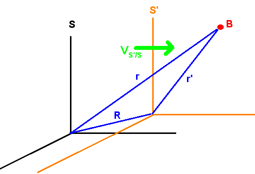
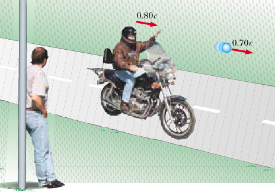
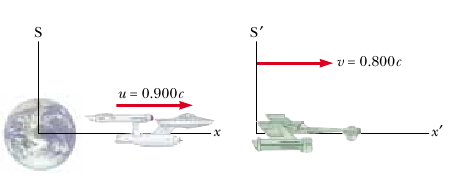

Transformadas de Lorentz
Transformadas de posição de Lorentz

Figura 01: Sistemas de referencia.
){kind=link}
Figura 01: Sistemas de referencia.
Einstein admite que a ideia global de Galileo sobre a física independer do observador está certa, contudo isso não implica em que se admita a validez das transformadas de Galileo. Como a pesquisa fundamental de Einstein se baseio no fato das equações de maxwell não serem invariantes frente a uma transformação de Galileo, ele tinha duas opções de trabalho. Reformular as lei de Maxwell a fim de que elas verificassem as transformadas de Galileo ou reformular as transformadas de Galileo. A fim de tentar explicar o resultado nulo do experimento de Michelson e Morley foram desenvolvidas teorias que reformularão as equações do Maxwell, as conjuntos destas teorias se lhes conhece como teorias de emissão. A ideia por trás dessas teorias era supor que a velocidade da luz dependia da velocidade da fonte e independia da velocidade do meio por onde se propaga luz. Experimentos posteriores mostraram que essas teorias todas estão erradas. Dessa forma parece que intentar modificar as transformações de Galileo resulta uma opção viável. A fim de fazer isso analisa as transformações de Galileo \begin{equation} \left\{ \begin{array}{rcl} x' & = & x-Vt\\ y' & = & y\\ z' & = & y\\ t' & = & t \end{array}\right.\label{eq_trans_pos_Galileo} \end{equation} Ele sabia que essas transformações funcionam muito bem quando estamos trabalho em sistemas onde a velocidade da luz é muito maior que a velocidade de qualquer corpo, de forma que qualquer modificação introduzida nessas equações deveria das como resultado as transformações originais no limite de baixa velocidade.
A fim de deduzir as novas transformadas, consideremos o seguinte experimento mental: Dois observadores em sistemas inerciais de referência, $S$ e $S'$, movem-se um junto a outro. O observador em $S$ observa que o observador em $S'$ se move com velocidade $V$ ao longo do eixo $x$ . Quando eles passam um pelo outro celebram o evento ligando uma lâmpada nas origens, temporariamente coincidente, de cada sistema, também ajustam seus relógios em zero.
De acordo com $O'$, depois de um tempo $t'$ a luz está sobre uma casca esférica de raio $r'=ct'$, centrada na origem do seu sistema de referência. Assim ele verifica que as coordenadas $(x',y',z')$ de um ponto típico sobre a casca esférica estão relacionados pela equação \begin{equation} x'^{2}+y'^{2}+z'^{2}=c{}^{2}t'^{2}\label{eq_luz _em_linha} \end{equation} Igualmente $O$ julga que o ponto de um ponto sobre a esfera na qual se encontra a luz verifica \begin{equation} x{}^{2}+y{}^{2}+z{}^{2}=c{}^{2}t{}^{2}\label{eq_luz_sem_linha} \end{equation} de forma que ambos acreditam estar no centro de uma casca esférica de luz que se expande com velocidade $c$ (observe que ambos observadores medem a mesma velocidade da luz (II postulado)).
A fim de encontrar as novas transformadas que deixem invariante o fenômeno físico (casca de luz) suporemos que estas terão a seguinte forma matemática: \begin{equation} \left\{ \begin{array}{rcl} x' & = & \gamma\left(x-Vt\right)\\ y' & = & y\\ z' & = & z\\ t' & = & \gamma\left(t+\delta\right) \end{array}\right.\label{eq_proposta_a_Galileo} \end{equation} Ou seja, a modificação que suporemos se da na direção do movimento e no tempo. Que a modificação seja na direção do movimento é obvio não há necessidade de incluir modificações nessas direções. Que a modificação seja um constante multiplicativa se deve a duas premissas: (1) essa é a modificação mais simples às equações de Galileo e (2) Supor de ordem maior em $x$ modificaria a homogeneidade do espaço (Qualquer ponto transladado é igualmente bom para descrever os fenômenos $\Rightarrow$ conservação do momento linear total de um sistema fechado) (Suponhamos que fosse as transformações fossem de $II$ ordem. Uma barra de comprimento $L=2\, m$ localizada em $S$ teria comprimentos diferentes, segundo $S'$, se a origem e o fim dela estivessem em lugares diferentes, suponhamos que inicialmente a barra é colocada entre os pontos $x_{f}=3$ e $x_{i}=1$ $(L=x_{f}-x_{i})$, o observador em $S'$ veria $x'_{f}\propto x_{f}^{2}=9$ e $x'_{i}\propto x_{i}^{2}=1$, de forma que $L'=x_{f}'-x_{i}'\propto8$, enquanto que se $S$ muda a barra para $x_{f}=5$ e $x_{i}=3$ agora $S'$ mediria $L'=x_{f}'-x_{i}'\propto16$ o dobro!!! simplesmente devido a uma translação) . Assim essa é a melhor escolha possível. De nossa analise previa sabemos que $\gamma$ deve verificar \[ \lim_{v/c\rightarrow0}\gamma=1 \] Da mesma forma propomos que o tempo seja modificado devido aos problemas de simultaneidade já apontados e esta modificação tem de ser linear devido à homogeneidade temporal (um intervalo de tempo dependeria de quando foi iniciado).
A fim de encontrar a forma das constantes $\gamma$ e $\delta$ vamos substituir em \ref{eq_luz _em_linha} a nova equação de transformação \ref{eq_proposta_a_Galileo} \begin{equation} \gamma^{2}\left(x^{2}-2Vxt+V^{2}t^{2}\right)+y^{2}+z^{2}=c^{2}\gamma^{2}\left(t^{2}+2\delta t+\delta^{2}\right)\label{eq_trLo10} \end{equation} a fim de encontrar a equação \ref{eq_luz_sem_linha}. Observe que na equação anterior não temos termo $xt$ à direita do igual, dessa forma devemos supor que o segundo termo entre parenteses à esquerda tenha que se cancelar com algum o alguma soma de termos à direita do igual. Como esse termo é proporcional à $t$ os termos à direita do parenteses também tem de ser potencias de $t$, se não o cancelamento não seria válido, dessa forma \[ -2\gamma Vxt=2\gamma^{2}\delta t \] ou \[ \delta=- \dfrac{Vx}{c^{2}} \] colocando esse resultado de volta em \[ \gamma^{2}x^{2}+\gamma^{2}V^{2}t^{2}+y^{2}+z^{2}=c^{2}\gamma^{2}t^{2}+c^{2}\gamma^{2} \dfrac{V^{2}x^{2}}{c^{4}} \] agrupando os termos em $x^{2}$ e em $t^{2}$ \[ \gamma^{2}\left(1- \dfrac{V^{2}}{c^{2}}\right)x^{2}+y^{2}+z^{2}=c^{2}\gamma^{2}\left(1- \dfrac{V^{2}}{c^{2}}\right)t^{2} \] comparando com \ref{eq_luz_sem_linha} vemos que \[ \gamma^{2}\left(1- \dfrac{V^{2}}{c^{2}}\right)=1 \] ou \[ \gamma= \dfrac{1}{\sqrt{1- \dfrac{V^{2}}{c^{2}}}} \] dessa forma as novas transforma de posição e tempo são \begin{equation} \begin{array}{rcl} x' & = & \dfrac{1}{\sqrt{1- \dfrac{V^{2}}{c^{2}}}}\left(x-Vt\right)\\ y' & = & y\\ z' & = & z\\ t' & = & \dfrac{1}{\sqrt{1- \dfrac{V^{2}}{c^{2}}}}\left(t- \dfrac{Vx}{c^{2}}\right) \end{array}\label{eq_Transf_Lorentz} \end{equation} Essas transformações recebem o nome de transformações de Lorentz pois em 1895 H. Lorentz chegou a esse mesmo resultados quando tentava manter a hipóteses do éter válida supondo a contração dos eletros no movimento em relação ao éter (ver a introdução onde se explica que Lorentz só foi o terceiro a conhecer as equação de Lorentz (ver introdução).
Caso queiramos calcular as observações de $S$ sabendo os resultados obtidos por $S'$, devemos notar que a equação de transformação mantêm a mesma estrutura, o único que devemos fazer é \begin{equation} \textrm{a esquerda do igual}\longrightarrow\left\{ \begin{array}{rcl} x' & \rightarrow & x\\ y' & \rightarrow & y\\ z' & \rightarrow & z\\ t' & \rightarrow & t \end{array}\right.\hspace{1em}\textrm{e, a direita do igual}\longrightarrow\left\{ \begin{array}{rcl} x & \rightarrow & x'\\ y & \rightarrow & y'\\ z & \rightarrow & z'\\ t & \rightarrow & t'\\ V & \rightarrow & -V \end{array}\right.\label{eq_muda_de_S_para_Slinha} \end{equation} dessa forma \[ \begin{array}{rcl} x & = & \dfrac{1}{\sqrt{1- \dfrac{V^{2}}{c^{2}}}}\left(x'+Vt'\right)\\ y & = & y'\\ z & = & z'\\ t & = & \dfrac{1}{\sqrt{1- \dfrac{V^{2}}{c^{2}}}}\left(t'+ \dfrac{Vx'}{c^{2}}\right) \end{array} \]
Dilatação do tempo e Contração do comprimento
Como é de se esperar, as equação de Lorentz permitem calcular a dilatação do tempo que foi explicado na aula anterior. Para isso devemos considera que os eventos ocorrem no mesmo ponto do sistema linha, mas a tempo diferentes, $t'_{1}$ e $t'_{2}$, assim, o intervalo de tempo medido pelo observador sem linha está dado por \begin{eqnarray*} \Delta t & = & t_{2}-t_{1}\\ & = & \dfrac{1}{\sqrt{1- \dfrac{V^{2}}{c^{2}}}}\left(t_{2}'+ \dfrac{Vx_{2}'}{c^{2}}\right)- \dfrac{1}{\sqrt{1- \dfrac{V^{2}}{c^{2}}}}\left(t_{1}'+ \dfrac{Vx_{1}'}{c^{2}}\right)\\ & & \dfrac{1}{\sqrt{1- \dfrac{V^{2}}{c^{2}}}}\left[\left(t_{2}'-t_{1}'\right)+ \dfrac{V}{c}\left(x_{2}-x_{1}\right)\right] \end{eqnarray*} mas, como $x'_{2}=x'_{1}$ \[ \Delta t= \dfrac{\Delta t'}{\sqrt{1- \dfrac{V^{2}}{c^{2}}}} \] No caso da contração dos comprimentos, vamos supor que temos um objeto que está em repouso em relação ao observador $S$, isso permite a esse observador medir simultaneamente ($t_{2}=t_{1}$) a posição das extremidades do objeto e determinar que seu tamanho é $L=x_{2}-x_{1}$. O observador em $S'$ realiza medidas das extremidades do objeto e determina que o comprimento deste é \begin{eqnarray*} L' & = & x'_{2}-x'_{1}\\ & = & \dfrac{1}{\sqrt{1- \dfrac{V^{2}}{c^{2}}}}\left(x_{2}-Vt_{2}\right)- \dfrac{1}{\sqrt{1- \dfrac{V^{2}}{c^{2}}}}\left(x_{1}-Vt_{1}\right)\\ & = & \dfrac{1}{\sqrt{1- \dfrac{V^{2}}{c^{2}}}}\left[\left(x_{2}-x_{1}\right)+V\left(t_{2}-t_{1}\right)\right] \end{eqnarray*} de onde \[ L'=\sqrt{1- \dfrac{V^{2}}{c^{2}}}L \]
Exemplo 01
Um observador no sistema $S$ nota um lampejo de uma luz vermelha na posição $x_{R}=3.00\, m$ e no tempo $t_{R}=1.00\times10^{-9}s$ e de uma luz azul em $x_{B}=5.00\, m$ ao tempo $t_{B}=9.00\times10^{-9}s$. Ao tempo $t=t'=0$ o observador do sistema $S'$ tem sua origem do sistema de coordenadas no mesmo ponto que a origem do sistema de coordenadas de $S$. Segundo o observador $S$ o sistema $S'$ se desloca com uma velocidade de $V_{s'/s}$ constante em sentido positivo de $x$. O observador em $S'$observa as duas lampejadas mas afirma que elas acontecem na mesma posição do espaço. (a) Encontre a velocidade de $S'$ em relação a $S$. (b) A posição das lampadas em relação a $S'$. (c) Em que momento o lampejo vermelho acontece segundo $S'$.
Exemplo 02
A nave espacial Entrerprise, $E$, é alcançada pelo novo modelo, a nave espacial Enterprise-linha, $E'$, com $E'$ passando por $E$ com uma velocidade relativa de $\left|V_{E'/E}\right|=c/2$. O capitão de $E$ saúda o capitão de $E'$ piscando as luzes de proa e da popa de $E$, simultaneamente do ponto de vista de $E$. Quando medido por $E$, a distância entre as luzes é $100\, m$. Qual é a diferença entre os tempos de emissão dos sinais das luzes, quando medidos por $E'$.
Transformadas de velocidade de Lorentz
Agora vamos analisar as transformações de velocidade de Galileo. Calculamos o diferencial de cada lado da equação \ref{eq_trans_pos_Galileo} \[ \left\{ \begin{array}{rcl} dx' & = & dx-Vdt\\ dy' & = & dy\\ dz' & = & dz\\ dt' & = & dt \end{array}\right. \] dividindo as três primeiras pela quarta temos: \[ \left\{ \begin{array}{rcl} u_{x}' & = & u_{x}-V\\ u_{y}' & = & u_{y}\\ u_{z}' & = & u_{z} \end{array}\right. \] onde \[ u_{x}= \dfrac{dx}{dt}\qquad u_{y}= \dfrac{dy}{dt}\qquad u_{z}= \dfrac{dz}{dt} \] e \[ u_{x}'= \dfrac{dx'}{dt'}\qquad u_{y}'= \dfrac{dy'}{dt'}\qquad u_{z}'= \dfrac{dz'}{dt'} \] Para encontrarmos as transformadas de velocidade de Lorentz calculamos os diferenciais da equação \ref{eq_Transf_Lorentz} \[ \begin{array}{rcl} dx' & = & \dfrac{1}{\sqrt{1- \dfrac{V^{2}}{c^{2}}}}\left(dx-Vdt\right)\\ dy' & = & dy\\ dz' & = & dz\\ dt' & = & \dfrac{1}{\sqrt{1- \dfrac{V^{2}}{c^{2}}}}\left(dt- \dfrac{Vdx}{c^{2}}\right) \end{array} \] dividindo as três primeiras pela quarta temos: \[ \begin{array}{rcclc} \dfrac{dx'}{dt'} & = & \dfrac{ \dfrac{1}{\sqrt{1- \dfrac{V^{2}}{c^{2}}}}\left(dx-Vdt\right)}{ \dfrac{1}{\sqrt{1- \dfrac{V^{2}}{c^{2}}}}\left(dt- \dfrac{Vdx}{c^{2}}\right)} & = & \dfrac{ \dfrac{dx}{dt}-V}{1- \dfrac{V}{c^{2}} \dfrac{dx}{dt}}\\ \dfrac{dy'}{dt'} & = & \dfrac{dy}{ \dfrac{1}{\sqrt{1- \dfrac{V^{2}}{c^{2}}}}\left(dt- \dfrac{Vdx}{c^{2}}\right)} & = & \dfrac{ \dfrac{dy}{dt}}{ \dfrac{1}{\sqrt{1- \dfrac{V^{2}}{c^{2}}}}\left(1- \dfrac{V}{c^{2}} \dfrac{dx}{dt}\right)}\\ \dfrac{dz'}{dt'} & = & \dfrac{dz}{ \dfrac{1}{\sqrt{1- \dfrac{V^{2}}{c^{2}}}}\left(dt- \dfrac{Vdx}{c^{2}}\right)} & = & \dfrac{ \dfrac{dz}{dt}}{ \dfrac{1}{\sqrt{1- \dfrac{V^{2}}{c^{2}}}}\left(1- \dfrac{V}{c^{2}} \dfrac{dx}{dt}\right)} \end{array} \] ou \[ \left\{ \begin{array}{rcl} u_{x}' & = & \dfrac{u_{x}-V}{1- \dfrac{Vu_{x}}{c^{2}}}\\ u_{y}' & = & \dfrac{\sqrt{1- \dfrac{V^{2}}{c^{2}}}}{1- \dfrac{Vu_{x}}{c^{2}}}u_{y}\\ u_{z}' & = & \dfrac{\sqrt{1- \dfrac{V^{2}}{c^{2}}}}{1- \dfrac{Vu_{x}}{c^{2}}}u_{z} \end{array}\right. \] Igualmente poderíamos calcular a velocidade vista por $S$ segundo $S'$ \[ \left\{ \begin{array}{rcl} u_{x} & = & \dfrac{u_{x}'+V}{1+ \dfrac{Vu_{x}}{c^{2}}}\\ u_{y} & = & \dfrac{\sqrt{1- \dfrac{V^{2}}{c^{2}}}}{1+ \dfrac{Vu_{x}}{c^{2}}}u_{y}'\\ u_{z} & = & \dfrac{\sqrt{1- \dfrac{V^{2}}{c^{2}}}}{1+ \dfrac{Vu_{x}}{c^{2}}}u_{z}' \end{array}\right. \]
Exemplo 03
){kind=link}
Figura 02: Exemplo 03.
Duas espaçonaves $A$ e $B$ estão se movendo em direções opostas, conforme mostrado na Figura acima. Um observador na Terra mede a velocidade da nave $A$ como $0,750c$ e a velocidade da nave $B$ como $0,850c$. Encontre a velocidade da nave $B$ observada pela tripulação da nave $A$.
Exemplo 04

Figura 02: Exemplo 04.
){kind=link}
Figura 02: Exemplo 04.
Imagine um motoqueiro se movendo a $0.80\, c$ em relação a uma pessoa na beira da estrada, como mostra a figura 02. Se o motoqueiro joga uma bola a frente dele como uma velocidade de $0.70\, c$ relativa a ele, qual é a rapidez de la bola em relação ao observador na beira da estrada.
Exemplo 05
){kind=link}
Figura 04: Exemplo 05.
Dois líderes de motocicletas chamados David e Emily estão correndo em velocidades relativísticas ao longo de trajetórias perpendiculares, como mostrado na Figura 04. Com que rapidez Emily se afasta, vista por David por cima do ombro direito?
Exemplo 06

Figura 04: Exemplo 05.
){kind=link}
Figura 04: Exemplo 05.
Uma nave Klingon se afasta da Terra com uma velocidade relativa à Terra de $0.80\, c$. A nave estelar Enterprise persegue a nave klingon com velocidade de $0,9\, c$ em relação a Terra (ver figura 03). Um observador na Terra observa a Enterprise ultrapassar a nave Klingon com velocidade relativa de $0,10\, c$. Qual é a velocidade que o capitão da nave Enterprise juga ter ultrapassado a Klingon
Momento Relativístico
)
Figura 04: (a) Colisão como vista pelo observador na Terra e (b) colisão como vista pelo observador em uma nave
A seguir analisemos a colisão perfeitamente inelástica entre duas partícula vistas por um observador na Terra (considerado um sistema inercial, que chamaremos de $T=S$) e por um observador em uma nave (sistema $N=S'$) que se move com velocidade $V=v_{N/T}$. Conforme o enunciado de Einstein, esperamos que a conservação do momento linear se verifique em ambos dos sistema inerciais. Iniciamos descrevendo o visto pelo observador em $T$, desde seu ponto de vista, antes da colisão as partículas se moviam com a mesma velocidade e a mesma direção, porém em sentidos opostos, sendo assim o momento do sistema era dado por \begin{align*} P_{i/T} &= mv_{A/T} + mv_{B/T}\\ &=m\left(v_{A/T} + v_{B/T}\right)\\ &=m(v-v)\\ &=0 \end{align*} após a colisão as partículas não mais se deslocam, desde a perspectiva de $T$ pelo que o momento final do sistema é \begin{align*} P_{f/T} &= (m+m) u_T\\ &= (2m) (0) \\ &=0 \end{align*} de forma que, desde o ponto de vista do observador na Terra o momento se conserva.
Agora analisemos o que um observador na nave observaria. Para isso vamos aplicar as transformações de Lorentz de velocidade, sabendo que a nave se move com velocidade $v$ em relação à Terra, \begin{array}{rcl} v_{A/N} &=& \dfrac{v_{A/T} - v_{N/T}}{1- \dfrac{v_{N/T}v_{A/T}}{c^{2}}} \\ &=& \dfrac{v - v}{1- \dfrac{vv}{c^{2}}} \\ &=&0 \end{array} \begin{array}{rcl} v_{B/N} &=& \dfrac{v_{B/T} - v_{N/T}}{1- \dfrac{v_{N/T}v_{B/T}}{c^{2}}} \\ &=& \dfrac{(-v) - v}{1- \dfrac{v(-v)}{c^{2}}} \\ &=& -\dfrac{2v}{1 + \left(\dfrac{v}{c}\right)^2} \end{array} \begin{array}{rcl} u_{B/N} &=& \dfrac{u_{B/T} - v_{N/T}}{1- \dfrac{v_{N/T}u_{B/T}}{c^{2}}} \\ &=& \dfrac{0 - v_{N/T}}{1- \dfrac{v_{N/T}(0)}{c^{2}}} \\ &=& \dfrac{- v}{1- 0} \\ &=&-v \end{array} por tanto, o momento inicial medido por um observado na nave será \begin{align*} P_{i/N} &= mv_{A/N} + mv_{B/N}\\ &=m\left[0 -\dfrac{2v}{1 + \left(\dfrac{v}{c}\right)^2} \right]\\ &=-\dfrac{2mv}{1 + \left(\dfrac{v}{c}\right)^2} \end{align*} enquanto que o momento final será \begin{align*} P_{f/N} &= (m+m) u_N \\ &= -2mv \end{align*} ou seja, para o observador na nave o momento não se conservaria!!, mas esse resultado viola o principio de equivalência, o momento deve conservar-se para todos os observadores em sistemas inerciais.
Sendo assim, devemos propor alguma alteração na forma de transformar o momento linear entre dois observadores em sistemas de referência inerciais, para isso vamos propor uma constante $\gamma$ que modifica a transformada de Galileo, dessa forma para o observador da Terra, temos \begin{align*} P_{i/T} &= \gamma mv + \gamma m(-v)\\ &=0\\ &\\ P_{f/T} &= \gamma (2m)(0)\\ &= 0 \end{align*} enquanto que para o observador na nave \begin{align*} P_{i/N} &= m(0) + \gamma m\left( -\dfrac{2v}{1 + \left(\dfrac{v}{c}\right)^2} \right)\\ &=-\dfrac{2\gamma mv}{1 + \left(\dfrac{v}{c}\right)^2}\\ &\\ P_{f/N} &= \gamma (M)(-v)\\ &= -\gamma M v \end{align*} Aqui vamos supor que a massa após a colisão não é a mesma que $2m$, igualando as expressões \begin{align*} M v &= \dfrac{2mv}{1 + \left(\dfrac{v}{c}\right)^2}\\ M &= \left[ \dfrac{2m}{1 + \left(\dfrac{v}{c}\right)^2} \right]\left[ \dfrac{1 - \left(\dfrac{v}{c}\right)^2}{1 - \left(\dfrac{v}{c}\right)^2} \right]\\ &= \left[ \dfrac{2m\left(1 - \left(\dfrac{v}{c}\right)^2\right)}{1 - \left(\dfrac{v}{c}\right)^4} \right] \end{align*}